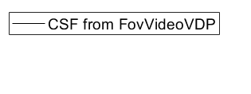
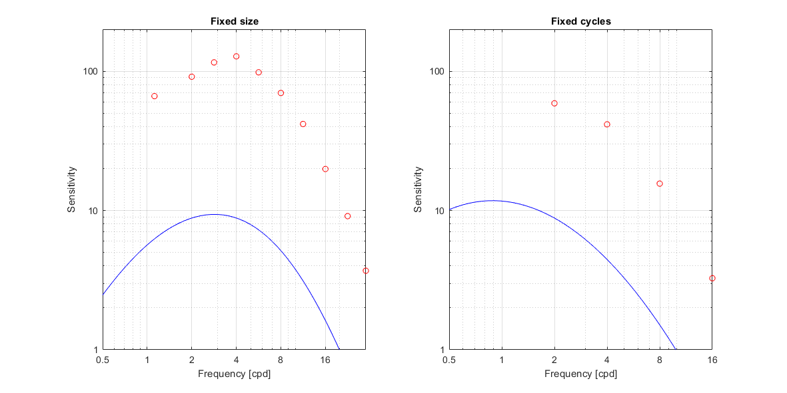
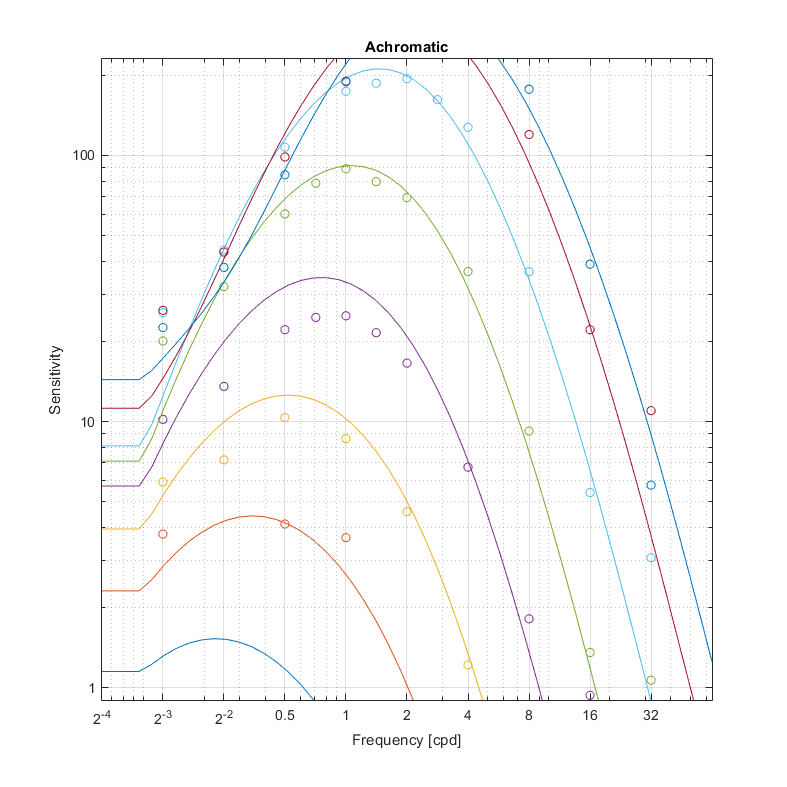
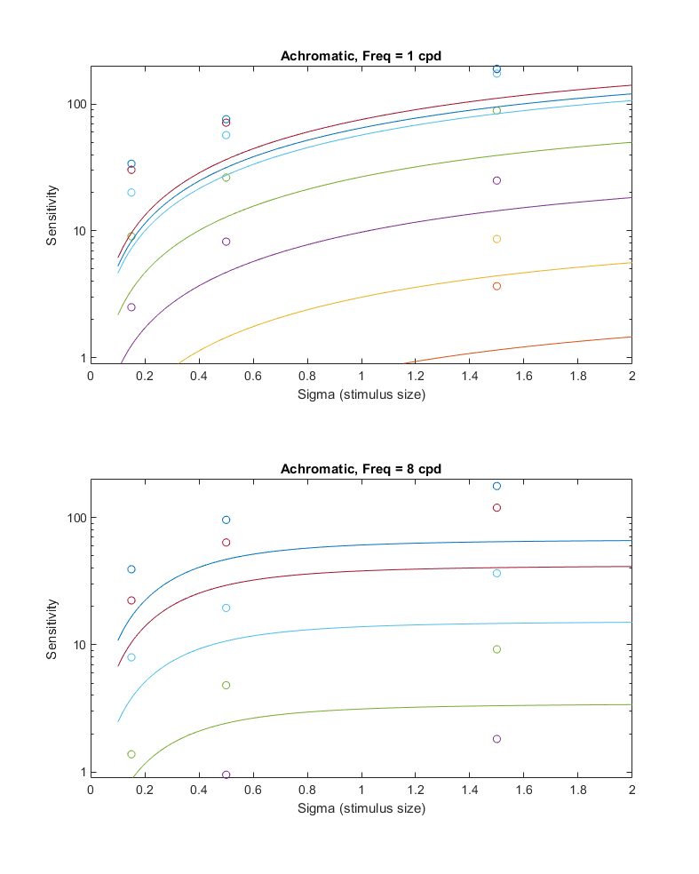
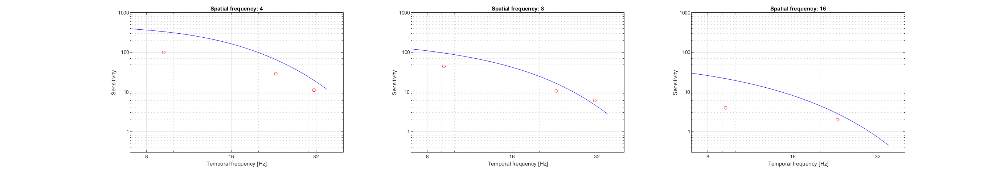
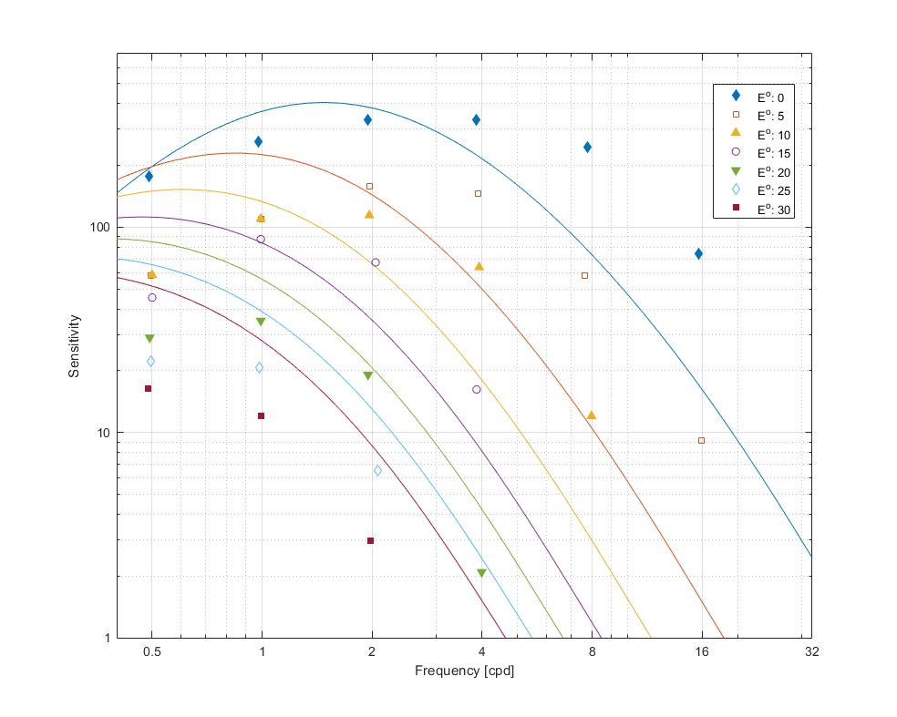

CSF model fit: st_temp_ecc
Report generated on 22-Oct-2021 16:55:06
Fitting error
| Dataset | Fitting error | Sensitivity adjustment |
| CSF from FovVideoVDP | CSF from FovVideoVDP |
| Average | 1.17866 [dB] | N/A |
| modelfest | 0.220334 [dB] | 1 |
| hdrvdp_csf | 0.601172 [dB] | 1.01334 |
| laird2006 | 1.35035 [dB] | 0.992015 |
| virsu1979 | 3.16923 [dB] | 0.998247 |
Model parameters
CSF from FovVideoVDP
p.S_0 = 2.04708;
Legend

↸Dataset: ModelFest
Achroatic CSF as a function of frequency

↸Dataset: HDR-VDP CSF
Achromatic CSF as a function of frequency

Achromatic CSF as a function of size

↸Dataset: Laird et al. 2006
Achromatic CSF as a function of temporal frequency for different spatial frequencies

↸Dataset: Visual resolution, contrast sensitivity, and the cortical magnification factor
Contrast sensitivity of central and peripheral vision as a function of spatial frequency and eccentricity
